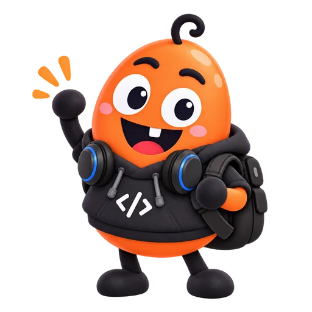
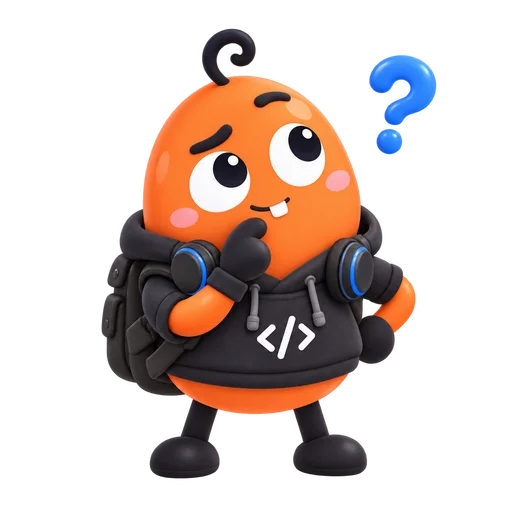
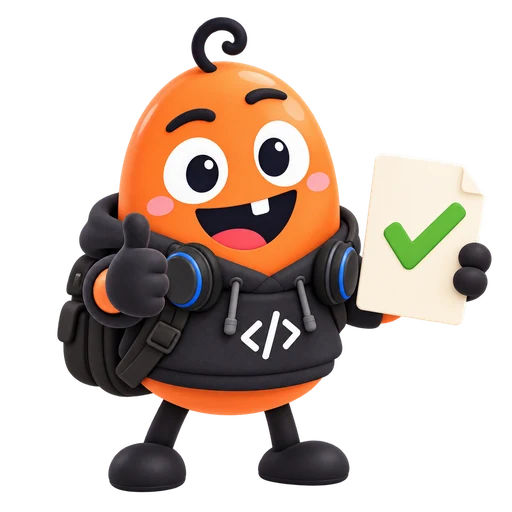
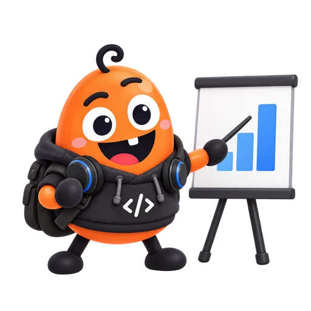

많은 글
패턴을 학습

Antigravity를 만나기 전 · 기초 이론
LLM과 AI Agent, 처음 이해하기

1 · LLM 이해하기
1 · LLM 이해하기
패턴을 학습
요청에 맞춰 생성
요약 · 번역 · 초안
문맥을 바탕으로 답변을 만들어 냅니다.

1 · LLM 이해하기
토큰 = 글의 작은 조각 · 위 예시는 설명용이며 실제 분할은 모델마다 달라요.

1 · LLM 이해하기
목적을 말하면, 초안·요약·번역을 같은 대화에서.
1 · LLM 이해하기
중요한 자료는 건네고, 길어진 대화는 핵심을 다시 정리.

1 · LLM 이해하기
독서모임 안내
확정된 메모
큰 글씨 · 5줄
“이 메모로 독서모임 안내문을 써 줘.
큰 글씨, 5줄로 만들어 줘.”
1 · LLM 이해하기
답변을 받음 ≠ 파일 저장·전송 완료

2 · Agent 이해하기
다음 행동 선택
파일 · 검색 · 계산
결과를 보고 계속
목표: “모임 안내 페이지를 파일로 만들어 줘.”
2 · Agent 이해하기
도구 · 입력 · 다음 단계
권한 확인 · 도구 호출
읽기 · 저장 · 실행

2 · Agent 이해하기
가상 안내 페이지 만들기 · 학습용 실행 흐름
기준을 채우면 완료 · 막히면 사람에게 질문
2 · Agent 이해하기
LLM · 다음 할 일
프로그램 · 실행 연결
자료함 · 문서 앱
역할을 이해하기 위한 비유입니다. AI가 사람처럼 의도·책임을 갖는다는 뜻은 아니에요.
3 · 잘 맡기고 확인하기
검색 자료 → LLM → 답변 · 연결되어 있을 때 가능

3 · 잘 맡기고 확인하기
근거 없이 내용을 만들기도 해요. 날짜·숫자·출처를 확인.

3 · 잘 맡기고 확인하기
목표 · 필요한 자료
허용할 행동의 범위
실제 파일 · 근거 확인
“완료했어요”라는 답변 뒤에는 결과물을 직접 열기.

3 · 잘 맡기고 확인하기
목표와 최종 확인
다음 말과 행동 선택
허용된 작업 실행

다음 단계
부탁하기 → 작업 지켜보기 → 결과 직접 열기
다음 단계
공식 문서 확인 2026-10-07 · 도식·비유·모임 사례는 자체 제작한 학습용 예시